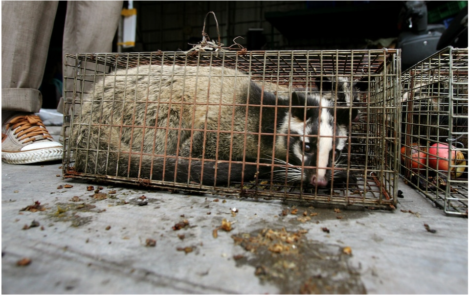
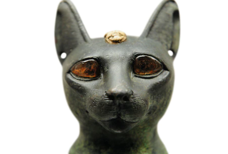
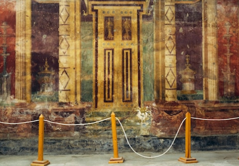

Animals
China's exotic farms may be a missing link behind the pandemic's leap to people
Read

History Magazine
From cats to cows to crocodiles, ancient Egyptians worshipped many animal gods
Read

Travel
Buried by Vesuvius, this ancient villa is an overlooked alternative to Pompeii
Read